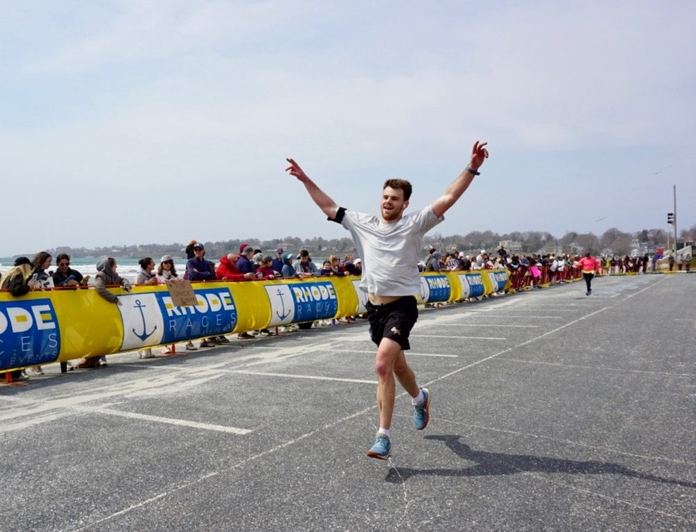

Outdoors · Iceland, Easter 2027
Leading a trip to Iceland
I'm leading a BC Outdoor Adventure trip to Iceland over Easter. Planning it uses the same skills as running Basecamp: risk briefings, backup plans, and food for everyone.
What I've been doing and where I've been going. Not a highlights reel, just the things I'd tell you about over coffee.
I'm leading a BC Outdoor Adventure trip to Iceland over Easter. Planning it uses the same skills as running Basecamp: risk briefings, backup plans, and food for everyone.
Worked as a Quality Analytics Engineering Intern at Tandem PV, building an inventory kiosk, a sensor network, and custom parts for the pilot line. Read the case study →

Crossed the finish line of my first full marathon along the Rhode Island coast. I started running in college for fitness, ran a half, and caught the bug. Training for the full meant early mornings, long Sunday runs, and getting comfortable with discomfort. Arms up, and already thinking about the next one.
A semester in a city-state I'd never visited, on a continent I'd barely explored. I took energy engineering and mathematical modeling courses, and ate very well.
Presented a machine learning model of blood flow through a stenotic artery to students and faculty. Explaining machine learning to a room of professors is its own kind of test.
Built a Power BI dashboard that brought a sourcing team's supplier data into one view, and got an inside look at how a large organization makes decisions. Read the case study →
Another season leading trips for BC Outdoor Adventure, this time deep in the Whites. Planning a multi-day trip for students who've never slept outside is its own engineering problem: weather, gear weight, trail difficulty, food, group dynamics. When it comes together, nothing beats it.
Took a Campus Recreation staff job at the climbing wall. Teaching people to trust a rope is a surprisingly good job.
Traveled to Hazard, KY with Habitat for Humanity to help rebuild homes damaged by flooding: hands-on construction with families waiting to come home.
Didn't die. Actually felt great. Signed up for the full before I'd caught my breath.
Joined BC Outdoor Adventure as a trip leader, a natural next step after years of backpacking with my family in the Sierras. Planning my first official trip felt like the moment a hobby became something more.
I grew up in the Bay Area and Boston College was the first time I'd lived anywhere else. The change of scenery was the point, and Boston in the fall is hard to argue with.